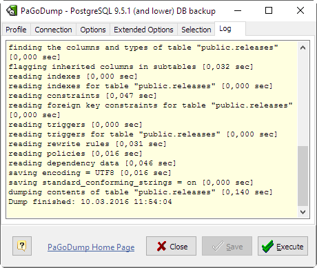

PaGoDump — extract a PostgreSQL database into SQL script file, archived SQL file (GZIP), TAR archive, or pg_restore custom archive (*.backup).
PaGoDump is a GUI Windows utility for backing up a PostgreSQL database built with Microolap PostgresDAC. It makes consistent backups even if the database is being used concurrently. PaGoDump does not block other users accessing the database (readers or writers), also it works with databases with any names (unicode) and dump them to any files (unicode again).
Dumps can be output in script or archive file formats. Script dumps are plain-text files containing the SQL commands required to reconstruct the database to the state it was in at the time it was saved. To restore from such a script, feed it to psql. Script files can be used to reconstruct the database even on other machines and other architectures; with some modifications even on other SQL database products.
The alternative archive file formats must be used with pg_restore to rebuild the database. They allow pg_restore to be selective about what is restored, or even to reorder the items prior to being restored. The archive file formats are designed to be portable across architectures.
When used with one of the archive file formats and combined with pg_restore, PaGoDump provides a flexible archival and transfer mechanism. PaGoDump can be used to backup an entire database, then pg_restore can be used to examine the archive and/or select which parts of the database are to be restored. The most flexible output file format is the "COMPRESS" format. It allows for selection and reordering of all archived items, and is compressed by default. The TAR format is not compressed and it is not possible to reorder data when loading, but it is otherwise quite flexible; moreover, it can be manipulated with standard Unix tools such as tar.
While running PaGoDump, one should examine the output for any warnings (Log tab), especially in light of the limitations listed below.
| Note: If all options are correct then target server version string appears. |
| PLAIN | - | output a plain-text SQL script file (the default). |
| TAR | - | output a tar archive suitable for input into pg_restore. Using this archive format allows reordering and/or exclusion of database objects at the time the database is restored. It is also possible to limit which data is reloaded at restore time. |
| COMPRESS | - | output a custom archive suitable for input into pg_restore. This is the most flexible format in that it allows reordering of loading data as well as object definitions. This format is also compressed by default. |
| DIRECTORY | - | Output a directory-format archive suitable for input into pg_restore. This will create a directory with one file for each table and blob being dumped, plus a so-called Table of Contents file describing the dumped objects in a machine-readable format that pg_restore can read. A directory format archive can be manipulated with standard OS tools; for example, files in an uncompressed archive can be compressed with the gzip tool. This format is compressed by default and also supports parallel dumps. |
| Note: Applicable for pre-8.4 versions of libraries only. |
On this tab you can specify what objects to be included or excluded from the dump result.
If Object Kind is Schema and Action is Include this dumps only schemas matching Object Name. This selects both the schema itself, and all its contained objects. Multiple schemas can be selected by adding multiple rows. Also, the Object Name value is interpreted as a pattern according to the same rules used by psql's \d commands, so multiple schemas can also be selected by writing wildcard characters in the pattern. When using wildcards, be careful to quote the pattern if needed.
| Note: When Include Schema is specified, PaGoDump makes no attempt to dump any other database objects that the selected schemas might depend upon. Therefore, there is no guarantee that the results of a specific-schema dump can be successfully restored by themselves into a clean database. |
| Note: Non-schema objects such as blobs are not dumped when Include Schema is specified. You can add blobs back to the dump with the Include BLOBs option. |
Exclude Schema causes do not dump any schemas matching the Object Name pattern. The pattern is interpreted according to the same rules as for Include Schema.
When both Include Schema and Exclude Schema are given, the behavior is to dump just the schemas that match at least one Include Schema switch but no Exclude Schema switches. If Exclude Schema appears without Include Schema, then schemas matching Exclude Schema are excluded from what is otherwise a normal dump.
Include Table dump only tables (or views or sequences) matching Object Name. Multiple tables can be selected by adding multiple Include Table rows.
The Include Schema and Exclude Schema switches have no effect when Include Table is used, because tables selected by Include Table will be dumped regardless of those switches, and non-table objects will not be dumped.
| Note: When Include Table is specified, PaGoDump makes no attempt to dump any other database objects that the selected table(s) might depend upon. Therefore, there is no guarantee that the results of a specific-table dump can be successfully restored by themselves into a clean database. |
| Note: The behavior of the Include Table is not entirely upward compatible with pre-8.2 PostgreSQL versions. Formerly, writing Include Table "tab" would dump all tables named "tab", but now it just dumps whichever one is visible in your default search path. To get the old behavior you can write *.tab. Also, you must write something like sch.tab to select a table in a particular schema. |
Exclude Table - do not dump any tables matching the Object Name pattern. The pattern is interpreted according to the same rules as for Include Table.
When both Include Table and Exclude Table are given, the behavior is to dump just the tables that match at least one Include Table switch but no Exclude Table switches. If Exclude Table appears without Include Table, then tables matching Exclude Table are excluded from what is otherwise a normal dump.
The following comand-line options may be specified to control PaGoDump behaviour:
| --help | - | will open this manual. |
| --host | - | specifies the host name of the machine. |
| --port | - | specifies the TCP port on which the server is listening for connections. |
| --user | - | user name to connect as. |
| --db | - | specifies the name of the database to be dumped. |
| --pwd | - | specifies a password for the connection. |
| --profile | - | specifies filename for the profile to be loaded at start. |
| --execute | - | causes immediate dump operation start. |
| --exit-on-success | - | causes program exit if no error is encountered while dumping the database. |
| Note: --profile parameter has the lowest priority. This means that any custom parameter specified specially, e.g. --host, --port etc. will be applied first. And not specified parameters will be taken from the profile. |
pagodump.exe --host="localhost" --user="dumper" --profile="C:\tmp\Foo.pgdprf"
PaGoDump internally executes SELECT statements. If you have problems running PaGoDump, make sure you are able to select information from the database using, for example, psql.
If your database cluster has any local additions to the template1 database, be careful to restore the output of PaGoDump into a truly empty database; otherwise you are likely to get errors due to duplicate definitions of the added objects. To make an empty database without any local additions, copy from template0 not template1, for example:
CREATE DATABASE foo WITH TEMPLATE template0;
PaGoDump has a limitation; when a data-only dump is chosen and the option "Disable Triggers" is used, PaGoDump emits commands to disable triggers on user tables before inserting the data and commands to re-enable them after the data has been inserted. If the restore is stopped in the middle, the system catalogs might be left in the wrong state.
Members of tar archives are limited to a size less than 8 GB. (This is an inherent limitation of the tar file format.) Therefore this format cannot be used if the textual representation of any one table exceeds that size. The total size of a tar archive and any of the other output formats is not limited, except possibly by the operating system.
The dump file produced by PaGoDump does not contain the statistics used by the optimizer to make query planning decisions. Therefore, it is wise to run ANALYZE after restoring from a dump file to ensure good performance. The dump file also does not contain any ALTER DATABASE ... SET commands.
Because PaGoDump is used to transfer data to newer versions of PostgreSQL, the output of PaGoDump can be loaded into newer PostgreSQL databases. It also can read older PostgreSQL databases. However, it usually cannot read newer PostgreSQL databases or produce dump output that can be loaded into older database versions. To do this, manual editing of the dump file might be required.
Disclaimer: for obvious reasons this document is based on the original PostgreSQL pg_dump documentation. Microolap Technologies don't pretend to be the author of the text above.